korzystało z AI w 2025 r. Eurostat ↗
AI DLA FIRM I ADMINISTRACJI · OD PIERWSZEGO MODUŁU
Transformacja AI. Krok po kroku, na Twoich zasadach.
Wybierz procesy, które warto uprościć. Połącz moduły w jeden system, sprawdź zakres wdrożenia i przekaż nam zapytanie. Od e-maili i dokumentów po lokalny LLM, logistykę, hotele oraz administrację.
80modułów w katalogu
13kategorii zastosowań
0 złza zapytanie
 Gminy i urzędyDokumenty, mieszkańcy, bezpieczeństwo
Gminy i urzędyDokumenty, mieszkańcy, bezpieczeństwo
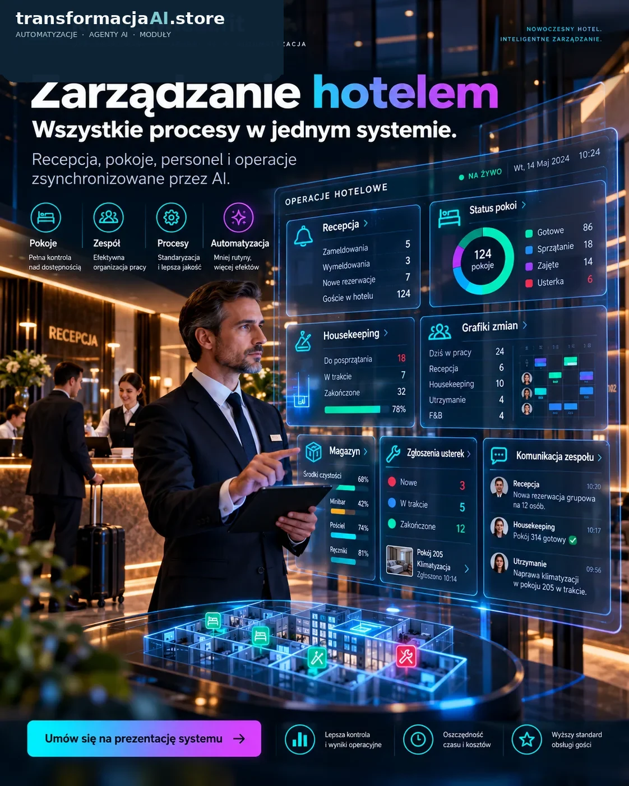
Hotele i sieciGoście, zadania, personel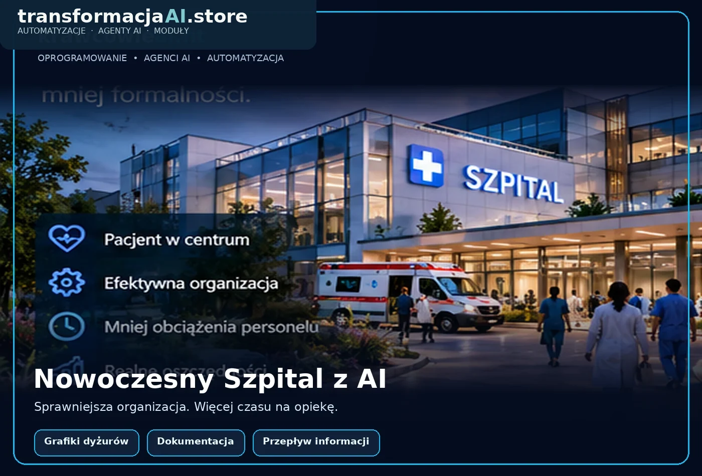
SzpitaleGrafiki, koordynacja, zasoby Firmy i logistykaZamówienia, dostawy, raportyOd jednego procesu do inteligentnej organizacjiKatalog 80 modułów · Mapa izometryczna · Zapytanie ofertowe
01
Wybierz modułyPrzeglądaj rozwiązania i funkcje
02
Zbuduj firmę z kafliKażdy wybór tworzy nowy obiekt
03
Wyślij do weryfikacjiOtrzymamy specyfikację i kontakt
TRENDY 2025–2026 · DANE, NIE HASŁA
AI jest już dostępne. Przewagę daje dobrze zaprojektowany proces.
Przedsiębiorstwa coraz częściej korzystają ze sztucznej inteligencji, ale nie każda organizacja widzi wpływ na wynik finansowy. Dlatego warto zacząć od mierzalnego zadania, a nie od samego zakupu narzędzia.
używało AI według tej samej metodyki Eurostatu (2025). Źródło ↗
wskazywało wzrost produktywności indywidualnej dzięki AI (2026). Źródło ↗
przypisywało AI co najmniej pewien wpływ na EBIT organizacji (2026). Źródło ↗
↗
Wniosek dla Twojej firmy: zamiast inwestować we wszystko naraz, zacznij od jednego procesu, w którym można porównać czas i jakość pracy przed automatyzacją i po niej.
Poznaj analizę rynku i transformacjiWskaźniki pochodzą z różnych prób badawczych. Nie należy ich porównywać jako udziałów tej samej populacji; dane McKinsey to deklaracje respondentów.
SZKOLENIA BRANŻOWE • AKADEMIA TRANSFORMACJI AI
Dopasuj swój skill AI do pracy codziennej.
Uczymy wykonywać codzienne zadania przy pomocy mikroaplikacji i agentów AI. Cztery programy branżowe, ćwiczenia na danych testowych, bezpieczne zatwierdzanie wyników i sprawdzian umiejętności.
Wybierz program warsztatów7 h · budownictwo / hotel14 h · szpital / gmina+4 h · administratorzy
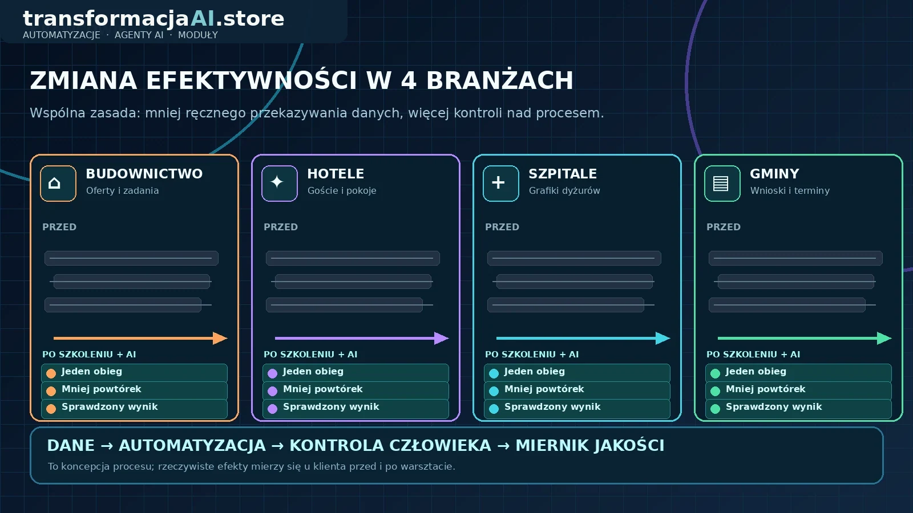
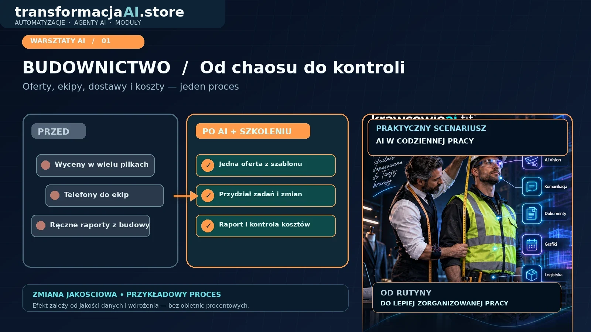
BudownictwoOferty, ekipy, dostawy ↗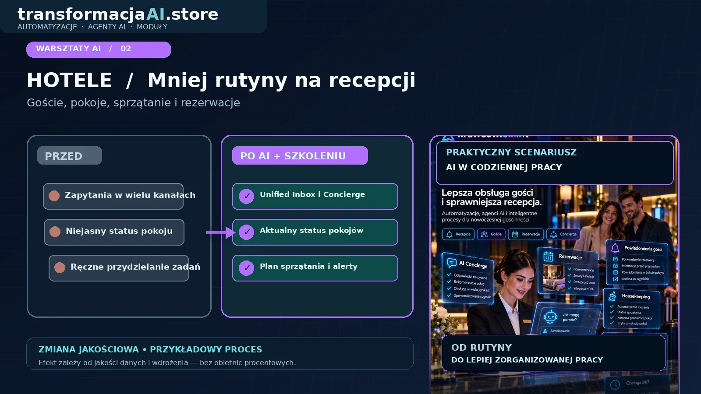
HoteleGoście, pokoje, obsługa ↗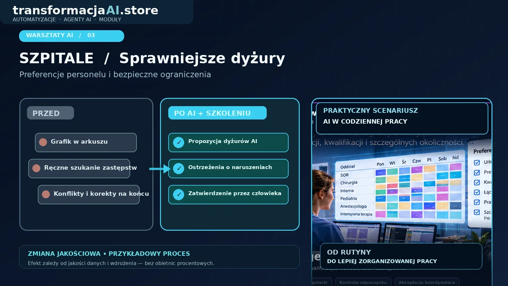
SzpitaleDyżury, zastępstwa, obsada ↗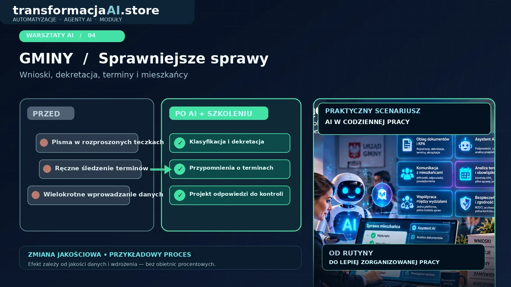
GminyPisma, KPA, mieszkańcy ↗Wizualizacje przedstawiają przykładową organizację pracy, a nie gwarantowane wyniki finansowe. Zakres warsztatów można dopasować do wybranych modułów w koszyku.
GOTOWE PAKIETY BRANŻOWE I RODZINNE
Dopasowane do Twojego świata pracy i historii.
Logistyka, spedycja i cyfrowe dziedzictwo przedsiębiorcy. Wybierz pakiet, a jego funkcje trafią na mapę, do koszyka i do gotowej wiadomości e-mail lub WhatsApp.
IMPORTERZY · DYSTRYBUTORZY · MAGAZYNY
Pakiet Logistyka wsparta AI
Od zamówienia i dostawy po magazyn, zapasy i reklamacje. AI sygnalizuje wyjątki, decyzje zachowuje zespół.
8 modułów · zestaw można zmienić przed wysłaniem zapytania.
FORWARDING · TRANSPORT · CMR
Pakiet Spedytora
Wyceny frachtu, dokumenty przewozowe, statusy transportu i reklamacje w połączonym obiegu.
8 modułów · zatwierdzanie krytycznych decyzji przez człowieka.

ZAŁOŻYCIELE FIRM · SUKCESJA · RODZINA
Moje Dziedzictwo
Dwanaście usług utrwalania wiedzy i historii firmy, avatar AI ze źródłami oraz opcjonalne warsztaty trzydniowe.
12 usług + 3 dni warsztatów · materiały i wizerunek wyłącznie za zgodą.
OD PILOTA DO PEŁNEJ TRANSFORMACJI
Cztery sposoby rozpoczęcia Twojej transformacji.
Oferta etapowa na podstawie materiału Transformacja AI. To propozycje zakresu startowego — liczba systemów i integracji oraz ostateczna cena wymagają indywidualnej wyceny.
01 / PIERWSZY KROK
AI Start
od 1 490 zł cena orientacyjna
Wybór jednego procesu, krótki pilotaż i pierwsze doświadczenia zespołu.
- Jeden wybrany problem
- Podstawowe uruchomienie i testy
- Krótka instrukcja użytkownika
02 / ROZWÓJ
AI Business
od 3 490 zł cena orientacyjna
Dwa lub trzy połączone działania: komunikacja, dokumenty i automatyzacja.
- Dobór 2–3 funkcji
- Proste integracje narzędzi
- Przegląd efektu po pilotażu
03 / SYSTEM
AI Operating System
od 6 990 zł cena orientacyjna
Warstwa AI pomiędzy aplikacjami i zespołami — z monitoringiem wyników.
- Wiele procesów i automatyzacji
- Agenci, reguły, raportowanie
- Wdrożenie etapowe
04 / NA MIARĘ
AI Atelier
Wycena indywidualna
Dedykowany software, lokalny model AI oraz serwer i infrastruktura dopasowane do organizacji.
- Private cloud / VPS / on-premise
- Bezpieczeństwo i kontrola danych
- Integracje i rozwój funkcji
Wartości „od” pochodzą z dostarczonej koncepcji oferty; nie są sumą dni pracy z katalogu 80 modułów i nie obejmują dowolnie rozbudowanych integracji, licencji ani infrastruktury. Podane kwoty wymagają potwierdzenia zakresu i sposobu naliczania VAT.
 SAMORZĄD · INTELIGENTNA GMINA
SAMORZĄD · INTELIGENTNA GMINA
● GOTOWY ZESTAW / GMINY I URZĘDY
Nowoczesna Gmina z AI
Cyfrowa obsługa spraw mieszkańców, dekretacja pism, terminy KPA, projekty dokumentów i uchwał, inwestycje oraz kokpit zarządczy. AI przygotowuje propozycje, a uprawniony urzędnik weryfikuje i zatwierdza czynności oraz treść dokumentów.
7 modułów98–182 dni prac IT*
* Szacunek prac IT, integracji, testów i debugowania. Integracje z EZD i e-Doręczeniami oraz zgodność z procedurami wymagają analizy urzędu. Bez szkoleń. Wybór można zmieniać.
// IMIM · INTERAKTYWNA MACIERZ INTELIGENTNEGO MIASTA
Miasto, urząd i mieszkańcy w jednej macierzy.
Wybierz moduły IMIM: lokalne AI dla urzędu, mikroserwisy Referent, dostęp do chronionych danych, przyjazne rozwiązania dla seniorów oraz konsultacje i zgłoszenia mieszkańców. Wycena i zakres po analizie potrzeb.
Wersja ofertowo-koncepcyjna, wdrożenia i funkcje wymagają doprecyzowania.
// GMINY · DWA SCENARIUSZE
Warsztaty dla urzędników ↗Więcej czasu dla mieszkańców.
Dwie ilustracje koncepcyjne: kokpit wójta/burmistrza oraz pracownik urzędu wspierany przez AI w obiegu dokumentów, dekretacji i pilnowaniu terminów.
01 / Wójt i burmistrzInwestycje, budżet, sprawy mieszkańców ↗
02 / Pracownik urzęduDokumenty, KPA, terminy i kontakt ↗
SZPITAL · OPIEKA · INTELIGENTNE PROCESY
● GOTOWY ZESTAW / PLACÓWKI MEDYCZNE
Nowoczesny Szpital z AI
Jednym kliknięciem wybierz 7 modułów usprawniających organizację szpitala. W centrum pakietu znajduje się mikroaplikacja planowania dyżurów lekarzy i pielęgniarek z preferencjami, urlopami, kwalifikacjami, zastępstwami i kontrolą ograniczeń — zawsze z zatwierdzeniem przez koordynatora.
7 modułów99–176 dni prac IT*
▦ Uruchom demo mikroaplikacji grafików dyżurów ↗Interaktywny demonstrator, bez danych pacjentów.
* Wstępna estymacja prac IT, integracji i testów, bez szkoleń. Algorytm wspiera planistę; nie zastępuje kontroli prawa pracy, zasad placówki ani decyzji przełożonego.
// SZPITALE · TRZY PERSPEKTYWY
Otwórz demo grafików ↗Więcej czasu dla pacjentów.
Trzy ilustracje koncepcyjne: zarządzanie placówką, inteligentne dyżury i współpraca personelu. Pokazują możliwe funkcje, nie gotowy certyfikowany system medyczny.
01 / Zarządzanie szpitalemProcesy, zasoby i koordynacja ↗
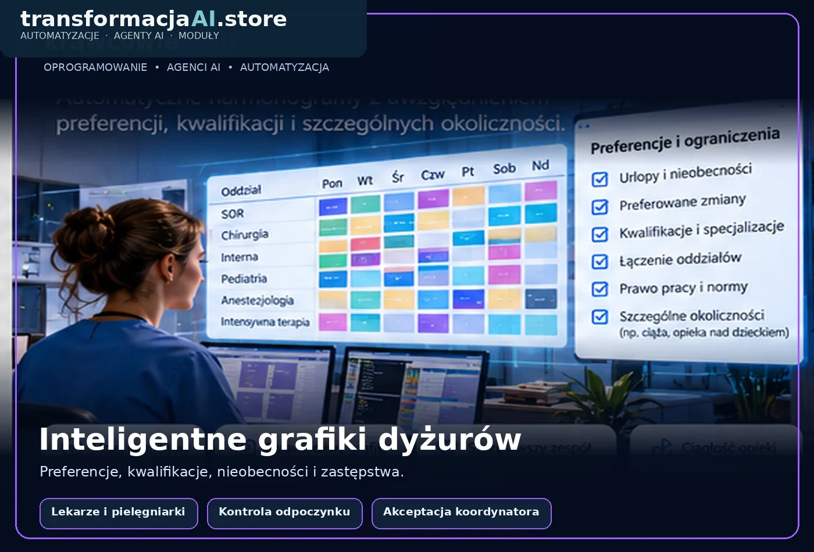
02 / Inteligentne grafiki dyżurówPreferencje, urlopy, obsada i zastępstwa ↗
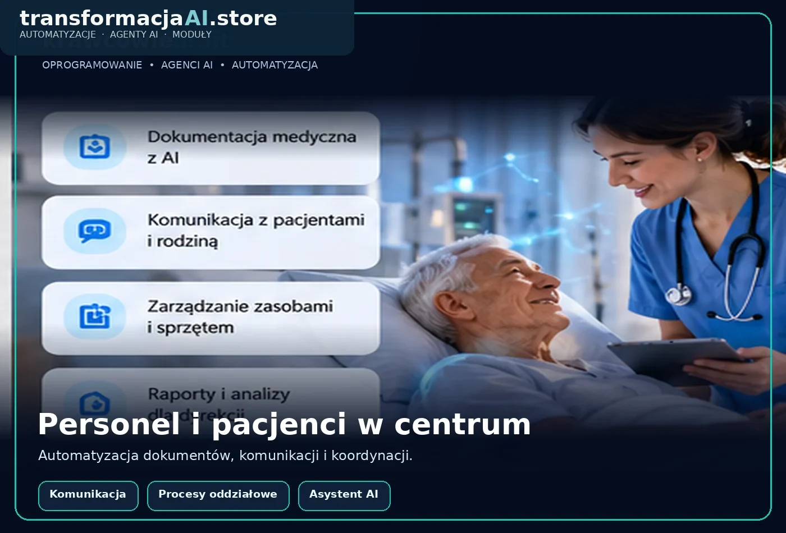
03 / Personel i pacjenciKomunikacja, dokumentacja i obsługa ↗
ZARZĄDZANIE HOTELEM · AI
● GOTOWY ZESTAW / HOTELARSTWO
Nowoczesny Hotel z AI
Połącz obsługę gości, recepcję, housekeeping, rezerwacje, personel i analitykę w jeden cyfrowy ekosystem. Wybierz 7 funkcjonalności jednym kliknięciem, zobacz hotel z procesów na mapie i wyślij zapytanie.
7 modułów92–160 dni prac IT*
* Orientacyjny czas programowania, integracji, testów i debugowania. Bez szkolenia personelu. Moduły można dowolnie zmieniać.
// HOTELARSTWO · TRZY OBSZARY
Wybierz swoje moduły ↗Jeden hotel. Trzy perspektywy.
Wizualizacje koncepcyjne. Wskaźniki i wartości na grafikach są przykładowe, nie stanowią prognozy wyników.
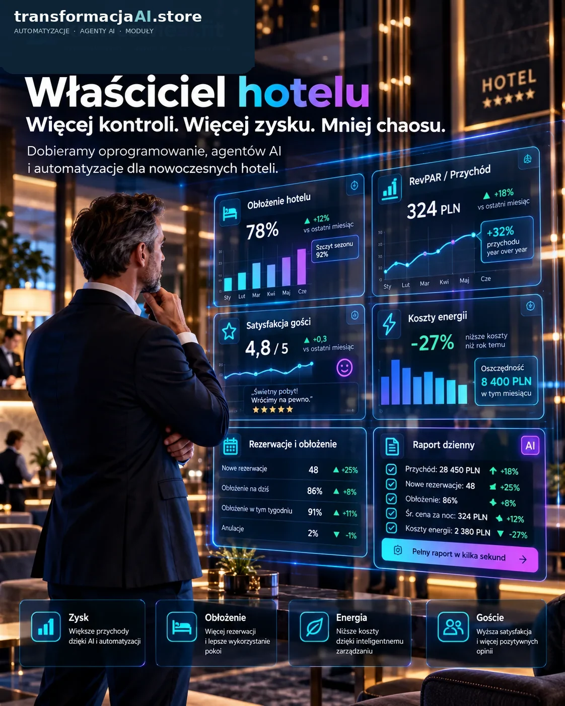
01 / Właściciel hoteluPrzychody, rentowność i przegląd wyników ↗
02 / Zarządzanie operacyjnePokoje, personel, zadania i statusy ↗
03 / Goście i recepcjaConcierge 24/7, rezerwacje i komunikacja ↗
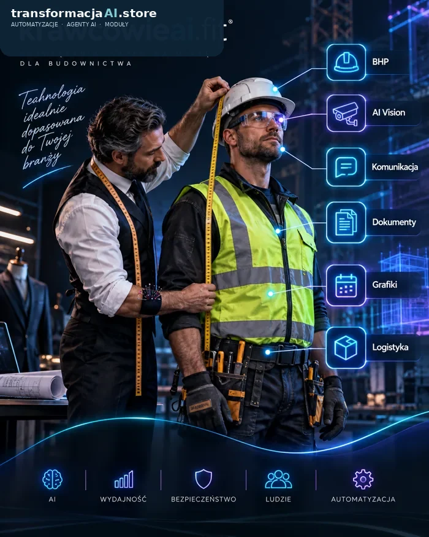
TECHNOLOGIA SZYTA NA MIARĘ● GOTOWY ZESTAW / BRANŻA BUDOWLANA
Nowoczesny Budowlaniec
Masz firmę budowlaną? Jednym kliknięciem zaprojektuj cyfrowe procesy: od wycen i dokumentów przez ekipy, materiały i postęp robót aż po kontrolę rentowności.
7 modułów77–136 dni prac IT*
* Szacunek kodowania, integracji, testowania i debugowania. Bez szkolenia pracowników. Zestaw można dowolnie modyfikować.
TECHNOLOGIA, KTÓRA MA SŁUŻYĆ FIRMIE
Transformacja AI przypomina dobór instalacji fotowoltaicznej.
Sam model AI jest jak panel. Efekt zależy od tego, czy dobrano odpowiednią moc, sposób połączenia systemów i plan monitorowania. Właśnie dlatego nasza oferta zaczyna się od procesu, a nie od listy technologii.
Zobacz pełne porównanie ↗Instalacja PVProjekt AI
Audyt zużyciaAudyt procesu
Dobór mocyWybór modułów i modeli
Falownik i magazynAPI, LLM, baza wiedzy
MontażIntegracje i automatyzacje
Monitoring produkcjiPomiar jakości i efektu
// TWOJA CYFROWA FIRMA
Wybieraj. Łącz. Buduj.
Kliknij Dodaj przy produkcie albo przeciągnij kafel na mapę firmy.
Wizualizacja koncepcji, nie gotowy system
WIDOK IZOMETRYCZNY / 01
Mapa Twojej organizacji ● ONLINE
● ARCHITEKTURA PROCESÓW0 / 80 MODUŁÓW
CENTRUM FIRMY WYBRANY MODUŁ WOLNE MIEJSCE
To jest Twoja firma przyszłości
Dodaj pierwszy moduł, a na planie pojawi się nowy proces. Kliknij budynek, aby sprawdzić szczegóły.
KALKULATOR HIPOTEZ BIZNESOWYCH
Sprawdź potencjał jednego dobrze dobranego procesu.
Podaj własne założenia. Symulator nie przewiduje przyszłości i nie obiecuje wyniku — pomaga przygotować rozmowę o pilotażu i sposobie pomiaru ROI.
PRZYKŁADOWY SCENARIUSZ
Zmniejszenie kosztu procesu / miesiąc1 500 zł
Dodatkowy przychód / miesiąc3 000 zł
Suma zmian przepływów / miesiąc4 500 zł
Wartość powyższego scenariusza / rok54 000 zł
To nie jest zysk netto ani wycena wdrożenia. Dodatkowy przychód nie jest równoznaczny z marżą. Oszczędność czasu nie musi oznaczać oszczędności gotówkowej. Wykluczone są koszty projektu i utrzymania.
Porozmawiajmy o miernikach dla Twojego procesu ↗// TWOJE ZAPYTANIETwój projekt ma
Twój projekt ma
konkretny kształt.
Wyślij zapytanie z własnej poczty lub WhatsApp — bez logowania i bez serwera formularzy. Wiadomość zawiera dane kontaktowe, preferencje i wszystkie wybrane moduły.
✓ Weryfikacja potrzeb
✓ Doprecyzowanie integracji
✓ Indywidualna wycena
TWÓJ WYBRANY ZESTAWNie wybrano jeszcze modułów
Wybierz rozwiązania w konfiguratorze.
DOBÓR ZAMIAST PRZYPADKOWYCH ZAKUPÓW
Technologia szyta na miarę.
Najpierw konfigurujesz proces. Potem wspólnie sprawdzamy sens biznesowy, wymagane integracje, bezpieczeństwo danych i realny harmonogram prac.
PILOTAŻ → POMIAR → ROZWÓJ
Nie trzeba zaczynać od rewolucji. Wystarczy usprawnić poniedziałek rano.
Pokazujemy możliwości, dobieramy moduły, wdrażamy pierwszy proces i sprawdzamy rezultat. Następnie to Ty decydujesz, czy warto rozbudować system.